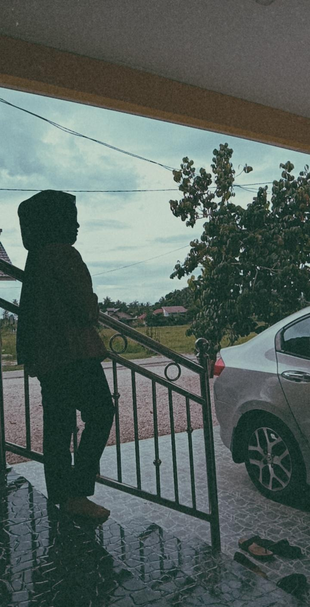

HELLO, WELCOME!
Hey, this is part of my
"MEANINGFUL EXPERIENCES"
HOME
BIOGRAPHY
EDUCATION
BLOODLINE
EXPERIENCE
GALLERY
INQUIRIES
"You will never be ready,
Just Start."
GLOBAL PANDEMIC COVID-19
The world had changed almost the entirety of our lifestyle as the COVID-19 pandemic triggered it. COVID-19 affects different people in different ways. But as life goes on, some of us still work and studies despite being held at home due to the government's Movement Control Order (MCO), which is remote working and e-learning for students. In the face of the global COVID-19 pandemic, had forced schools, universities, and companies to remote working to break the chain of Covid-19 disease. As time goes by, without us realizing it, for almost a year we have been facing this pandemic and online learning was to university students is the best way to prevent spread the virus. Many of us have been affected by this pandemic Covid-19 including students.
Maybe for some people, experience this e-learning such a normal things but not for me, there not denying that during this pandemic may gives us to returned home and spend more time with our family because of the quarantine but also makes me feel lost and sometimes emptiness where you’re missing friends and finding studying difficult. This probably makes us feeling anxious, sad and uncertain. This is because e-learning program, online school was confusing to adjust to as we had not been prepared this method. E-learning program makes me feel to be even more stressful than regular classrooms with the overload work with lack of internet access to be able to participate in online classes. Day by day, thankfully, i manage to adapt the situation and this online class with the support from family and friends that always be beside me.
